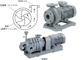

2024年
問題114 給水設備機器に関する次の記述のうち，最も不適当なものはどれか．
（1）木製貯水槽は，断熱性に優れているため結露対策が不要である．
（2）FRP 製貯水槽には，藻類の発生を抑えるため，光の透過率を低くした製品がある．
（3）ポンプ直送方式に用いられる加圧ポンプには，水量と圧力の関係に基づき，末端の圧力が一定になるように制御する推定末端圧力一定制御方式がある．
（4）渦巻きポンプは，羽根車を高速回転し，水に向心力を与えて吐出させる．
（5）受水槽から高置水槽へ送水する揚水ポンプの起動・停止は，高置水槽の水位により作動させる．
2024年
問題114 正解（4） 頻出度AAA
「向心力」→「遠心力」が正しい．
渦巻きポンプ（2024-114-1図参照）は，羽根車と渦巻き状のケーシング(渦室)で水に遠心力を与え，速度エネルギーを圧力エネルギーに変換する．多段型は高揚程を得るのに用いられる．

出典（写真） 川本ポンプ
https://www.kawamoto.co.jp/
-(1) ，-(2) 貯水槽の種類2024-114-1表参照．
2024-114-1表 貯水槽の種類
| 鋼板製貯水槽 | 鋼板の一体成形構造に防錆材（エポキシ樹脂）を焼き付けコーティングしたもの，鋼板製パネルにナイロンコーティングしたものをボルトで組みてるパネル型等がある． | 1）加工性に優れ，価格も比較的安価である． 2）機械的強度が強く，耐震補強をする必要がない． 3）防錆理被膜を毎年点検する必要がある．防錆理被膜が破壊されると，本体の鉄の腐食が進行する． |
| FRP製水槽 （FRP：繊維強化プラスチック） |
FRP製貯水槽は軽量で施工性に富み，耐食性があり衛生的であるため，貯水槽の主流となっている． | 1）水槽内照度が100Lxを超すと，藻類が繁殖しやすい．照度率（槽内照度/外部照度×100）を0.1％以下にする． 2）機械的強度は低い． 3）経年変化による強度劣化があり，又紫外線に弱い． 4）複合板構造のFRP製貯水槽では結露による問題はほとんど起こらない． |
| ステンレス鋼板製貯水槽 | 強度があり，普通鋼板に比べて板厚を薄くでき，重量も軽く外観もきれい． | 耐食性に優れているが，塩素により気相部（水槽の水位面より上部の空気が存在する部分）に腐食が発生することがある． 気相部に耐食塗装を施したり，塩素に強いステンレス鋼板を用いるなどの対策を施す． |
| 木製貯水槽 | 大型貯水槽には木製のものもある． | 1）木製貯水槽は堅ろうで狭い場所での搬入・現場組みてが容易である． 2）断熱性がよく，結露の心配がない． 3）形状が円形又は楕円形に限定される． 4）喫水部に腐朽の恐れがある． |
-(3) ポンプ直送方式など，建物内の給水方式については2024-114-2表，2024-114-3表参照．
2024-114-2表 直結方式と貯水槽方式
| 水道直結方式 | 直結直圧方式 | タンクレス |
| 直結増圧方式 | ||
| 受水槽方式 | 高置水槽方式 | 受水槽＋高置水槽 |
| 圧力水槽方式 | 高置水槽なし | |
| ポンプ直送方式 |
2022-114-3表 給水方式
| 直結直圧方式 |
|
配水管の圧力によって直接各所に給水する方式．配水管の水圧により揚水できる高さが決まってしまう．水道施設の技術的基準を定める省令では配水管（水道本管）から（需要場所の）給水管に分岐する簡所での配水管の最小動水圧が150kPaを下らないこと（ただし，給水に支障がない場合は，この限りでない）と定めている．引込み管径は配水管径による制約があるが，機械室スペース等は不要で，設備費は一番低廉である．給水の汚染の危険性も一番少ない．維持管理は容易であるが，配水管が断水すると即給水不能となる．適用出来る建物は小規模で通常2階まで，高圧給水で最大5階までである． |
| 直結増圧方式 |
|
タンクレスなので簡易専用水道に該当しない．従来なら非衛生になりがちな10m3以下の小規模受水槽の建築物に対する方式として開発された．引込み管に増圧ポンプを設け，配水管の水圧に関係なく中高層（10階程度まで）の中規模の建築物まで適用できるようにしたもの．引き込み管径は受水槽方式より大きくする必要があるが，配水管の給水圧力の低下を防ぐため引込み管径（量水器口径）に制限がある．危険物を扱う工場などは水道事業体によっては認められない場合がある．増圧装置は比較的高価で，水道本管への逆流を防止するための装置が必要である．増圧ポンプは，ポンプ本体，少流量時のポンプ起動回数抑制のための小容量の圧力水槽，制御盤が組み込まれた，設置スペースが小さくて済むユニット型（加圧ポンプユニット）が多用されている．
近年，増圧ポンプを中間に直列に設置してより高層の建築物に適用できる直列多段方式の採用も見られる． 増圧装置，減圧逆流防止器は定期的な保守が必要である．給水管内の空気の排出と給水管内が負圧になった場合の逆流防止のために最高位に吸排気弁を設置する． |
| 高置水槽方式 |
|
受水槽と高置水槽を揚水ポンプでつないだ簡単な機構の方式である．揚水ポンプは，高置水槽の水位の低下により起動するように制御されている．これまで最も普及した方式で，給水箇所では圧力は安定しているが，高層階で圧力が不足し，下層階で圧力が高くなる欠点がある．給水管径は自由に設計できるが，受水槽，高置水槽，ポンプ設置スペースと広いスペースが必要で，高置水槽の設備費が大きい．水槽が複数あるので汚染の危険が一番大きいが，断水時，受水槽，高置水槽の残留水による一時的な給水が可能である．適用出来る建物は小規模から大規模まで可能．水槽の貯留水がクッションとなって一時的に過大な水使用に対応できる． この方式に限らず，水の滞留を避けるため，受水槽方式の受水槽の有効容量は，一般に1日最大使用水量の1/2とする．高置水槽の有効容量は一般に1日最大使用水量の1/10とする． |
| 圧力水槽方式 |
|
受水槽内の水を給水ポンプにより圧力水槽へ送り，圧力水槽内の空気を圧縮・加圧し，その圧力により給水する方式．ポンプは，水の使用により圧力水槽の水圧が低下すると起動し，一定水圧になると停止するように制御されている．給水箇所で圧力の変動があるのが欠点．現在この方法はほとんど採用されなくなった．次のポンプ直送方式が主流となっている |
| ポンプ直送方式 |
|
受水槽の水を直送ポンプ（加圧ポンプユニット）で必要箇所に直接給水する．流量制御はポンプの台数制御，インバータの周波数変換による回転数制御，その組合せ方式などにより，末端の圧力が一定になるように制御する推定末端圧力一定制御方式などがある．少流量時のポンプの起動・停止の頻度を少なくするための小型圧力水槽を設けている例が多い．給水管径は自由に設計可である．受水槽，ポンプ設置スペースが必要．受水槽加算で直結増圧式より設備費は高い．受水槽での汚染の危険がある．ポンプの停止時や，性能低下時に上層階で給水管内が負圧になりやすいので注意を要する．受水槽，ポンプの維持管理，水質管理が必要である．適用出来る建物は小規模から大規模まで可能である．一時的に過大な水使用にも対応できる．断水時，受水槽の残留水による給水が可能である． |
-(5) 少し考えれば当たり前だが，揚水ポンプは高置水槽の水位で運転する（2024-114-2図参照）．
出典 公益財団法人 日本建築衛生管理教育センター
新建築物の環境衛生管理 H31.3.31第1版第1刷 中412 図6-3-7⑴
受水槽の水位制御には「定水位弁」が用いられることもある（2024-114-3図）．